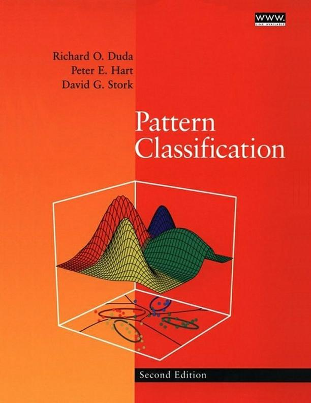
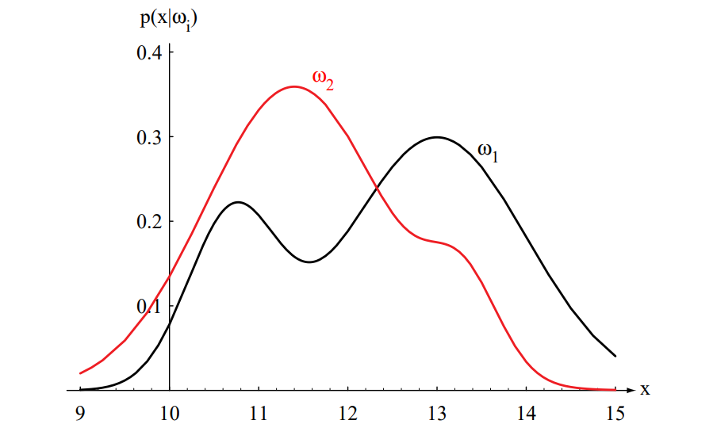
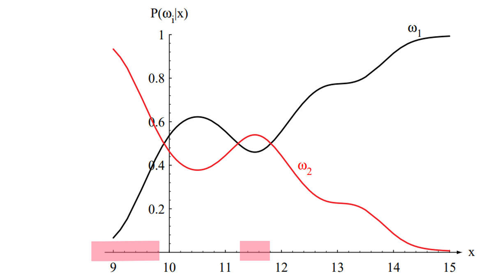
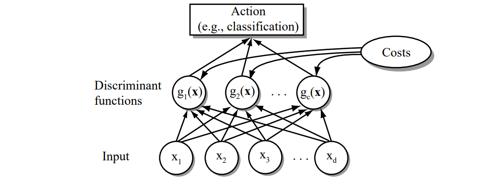
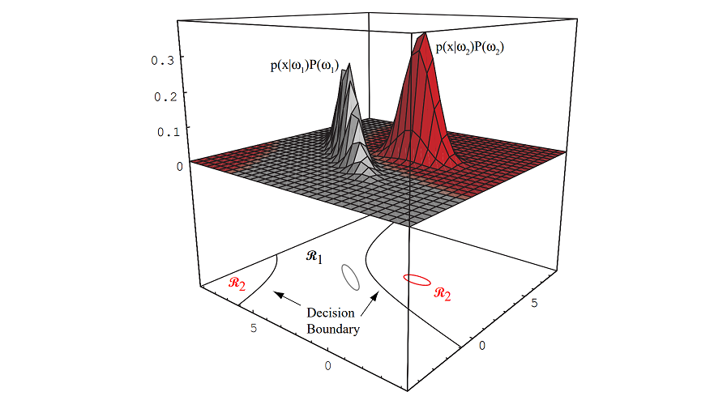
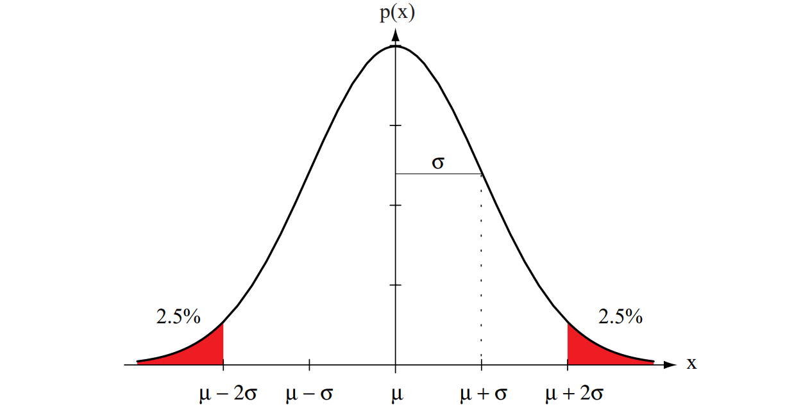
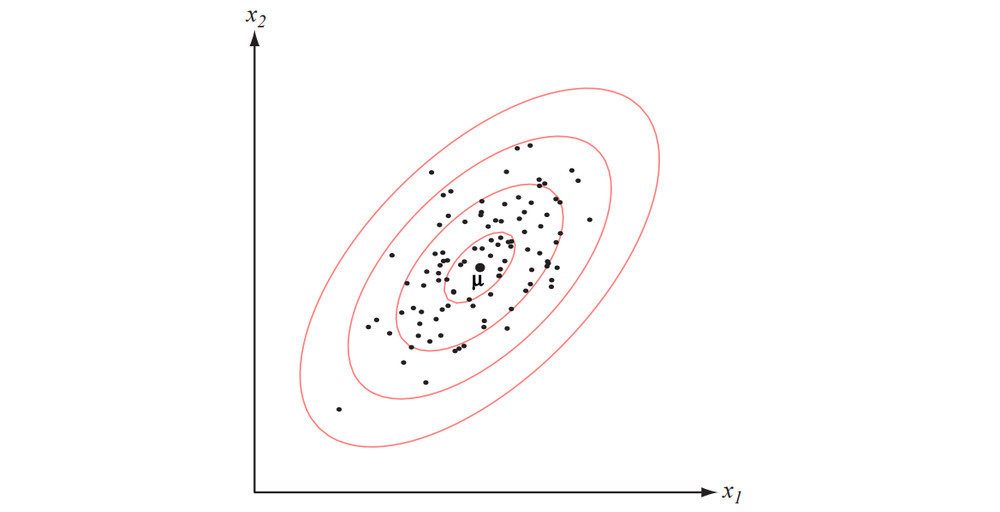
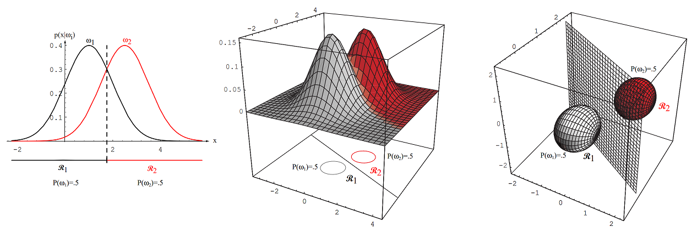
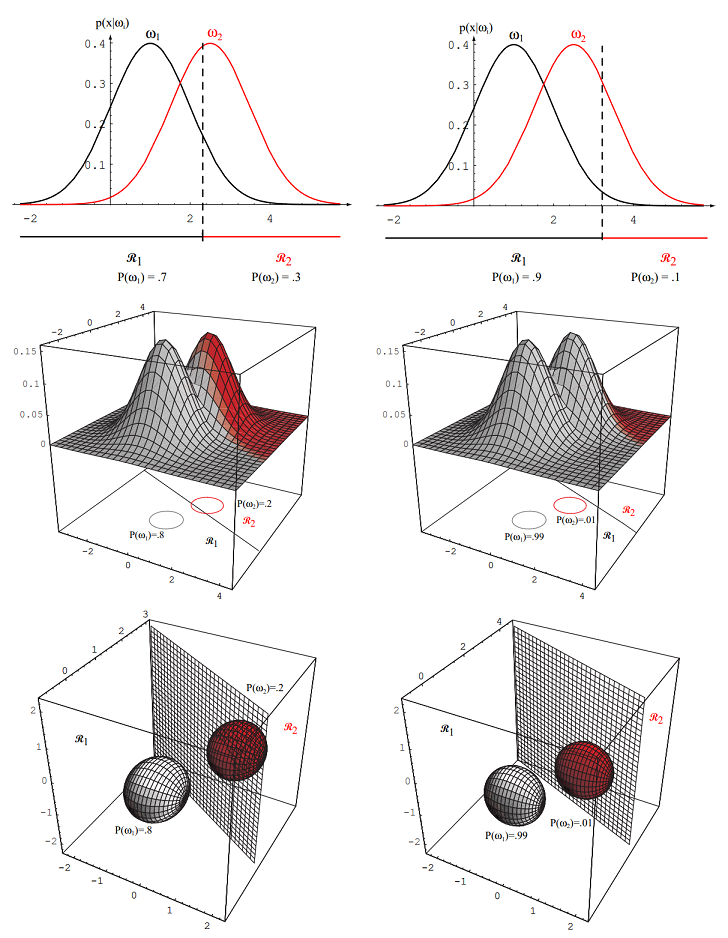

Bayesian Decision Theory#
Chapter 2 of Pattern Classification [DHS00]

Introduction#
Bayesian Decision Theory is a statistical approach to pattern classification.
It quantifies tradeoffs between classification decisions using probabilities and costs.
Assumes all relevant probabilities are known.
Example: Classifying fish (sea bass vs. salmon) based on features like lightness.
Key Concepts#
State of Nature (\( \omega \)): Represents the true category (e.g., sea bass or salmon).
Prior Probability (\( P(\omega_j) \)): Probability of a category before observing any data.
Class-Conditional Probability Density (\( p(x|\omega_j) \)): Probability of observing feature \( x \) given category \( \omega_j \).
Posterior Probability (\( P(\omega_j|x) \)): Probability of category \( \omega_j \) after observing feature \( x \).
Bayes’ Formula#
Bayes’ Theorem:
\[ P(\omega_j|x) = \frac{p(x|\omega_j) P(\omega_j)}{p(x)} \]Posterior = (Likelihood × Prior) / Evidence
Evidence (\( p(x) \)): Normalizing constant, often ignored in classification.
\[ p(x) = \sum_{j=1}^c p(x|\omega_j) P(\omega_j) \]
The probability \( P(\omega_j) \) is converted to the a posteriori probability (or posterior probability) \( P(\omega_j|x) \) — the probability of the state of nature being \( \omega_j \) given that feature value \( x \) has been measured. We call \( p(x|\omega_j) \) the likelihood of \( \omega_j \) with respect to \( x \) (a term chosen to indicate that, other things being equal, the category \( \omega_j \) for which \( p(x|\omega_j) \) is large is more “likely” to be the true category).
Notice that it is the product of the likelihood and the prior probability that is most important in determining the posterior probability; the evidence factor, \( p(x) \), can be viewed as merely a scale factor that guarantees that the posterior probabilities sum to one, as all good probabilities must. The variation of \( P(\omega_j|x) \) with \( x \) is illustrated in Figure 2.2 for the case \( P(\omega_1) = \frac{2}{3} \) and \( P(\omega_2) = \frac{1}{3} \).

Figure 2.1: Hypothetical class-conditional probability density functions show the probability density of measuring a particular feature value \( x \) given the pattern is in category \( \omega_i \). If \( x \) represents the length of a fish, the two curves might describe the difference in length of populations of two types of fish. Density functions are normalized, and thus the area under each curve is 1.0.
Decision Rule#
Minimum Error Rate Classification:
Decide \( \omega_1 \) if \( P(\omega_1|x) > P(\omega_2|x) \), otherwise decide \( \omega_2 \).
Equivalent to: \( \text{Decide } \omega_1 \text{ if } p(x|\omega_1) P(\omega_1) > p(x|\omega_2) P(\omega_2) \)
Probability of error: \( P(\text{error}|x) = \min[P(\omega_1|x), P(\omega_2|x)] \)

Figure 2.2: Posterior probabilities for the particular priors \(P(\omega_1) = \frac{2}{3}\) and \(P(\omega_2) = \frac{1}{3}\) for the class-conditional probability densities shown in Figure 2.1. Thus, in this case, given that a pattern is measured to have feature value \(x = 14\), the probability it is in category \(\omega_2\) is roughly \(0.08\), and that it is in \(\omega_1\) is \(0.92\). At every \(x\), the posteriors sum to \(1.0\).
Some additional insight can be obtained by considering a few special cases:
Case 1: If for some \( x \) we have \( p(x|\omega_1) = p(x|\omega_2) \), then that particular observation gives us no information about the state of nature. In this case, the decision hinges entirely on the prior probabilities \( P(\omega_1) \) and \( P(\omega_2) \).
Case 2: If \( P(\omega_1) = P(\omega_2) \), then the states of nature are equally probable. In this case, the decision is based entirely on the likelihoods \( p(x|\omega_j) \).
General Case: In general, both the prior probabilities and the likelihoods are important in making a decision. The Bayes decision rule combines these factors to achieve the minimum probability of error.
Generalization to More Than Two Classes#
The Bayes decision rule to minimize risk calls for selecting the action that minimizes the conditional risk. To minimize the average probability of error, we should select the class \(i\) that maximizes the posterior probability \(P(\omega_i|\mathbf{x})\). In other words, for minimum error rate:
This rule generalizes naturally to multiple classes (\(c > 2\)). For each class \(\omega_i\), we compute the posterior probability \(P(\omega_i|\mathbf{x})\) and assign the feature vector \(\mathbf{x}\) to the class with the highest posterior probability. This ensures that the probability of error is minimized.
Discriminant Functions#
Discriminant Function (\( g_i(\mathbf{x}) \)): Used to assign a feature vector \( \mathbf{x} \) to class \( \omega_i \).
For minimum error rate: \( g_i(\mathbf{x}) = P(\omega_i|\mathbf{x}) \)
Can also be expressed as: \( g_i(\mathbf{x}) = p(\mathbf{x}|\omega_i) P(\omega_i) \)
Or in log form: \( g_i(\mathbf{x}) = \ln p(\mathbf{x}|\omega_i) + \ln P(\omega_i) \)
 Figure 2.5: The functional structure of a general statistical pattern classifier which includes \(d\) inputs and \(c\) discriminant functions \(g_i(\mathbf{x})\). A subsequent step determines which of the discriminant values is the maximum, and categorizes the input pattern accordingly. The arrows show the direction of the flow of information, though frequently the arrows are omitted when the direction of flow is self-evident.

Figure 2.6: In this two-dimensional two-category classifier, the probability densities are Gaussian (with \(1/e\) ellipses shown), the decision boundary consists of two hyperbolas, and thus the decision region \(\mathcal{R}_2\) is not simply connected.
Normal Density#
Univariate Normal Density: \( p(x) = \frac{1}{\sqrt{2\pi}\sigma} \exp\left[-\frac{1}{2}\left(\frac{x-\mu}{\sigma}\right)^2\right] \)
For which the expected value of \(x\) (an average, here taken over the feature space) is:
and where the expected squared deviation or variance is:
The univariate normal density is completely specified by two parameters: its mean \(\mu\) and variance \(\sigma^2\). For simplicity, we often abbreviate \(p(x)\) by writing \(p(x) \sim N(\mu, \sigma^2)\) to say that \(x\) is distributed normally with mean \(\mu\) and variance \(\sigma^2\). Samples from normal distributions tend to cluster about the mean, with a spread related to the standard deviation \(\sigma\) (see Figure 2.7).

Figure 2.7: A univariate normal distribution has roughly \(95\%\) of its area in the range \(|x - \mu| \leq 2\sigma\), as shown. The peak of the distribution has value \(p(\mu) = \frac{1}{\sqrt{2\pi}\sigma}\).
Multivariate Normal Density#
Mean vector (\(\boldsymbol{\mu}\)) and covariance matrix (\(\boldsymbol{\Sigma}\)) describe the distribution.
Formal Definitions#
Formally, we have:
and
where the expected value of a vector or a matrix is found by taking the expected values of its components. In other words, if \(x_i\) is the \(i\)th component of \(\mathbf{x}\), \(\mu_i\) the \(i\)th component of \(\boldsymbol{\mu}\), and \(\sigma_{ij}\) the \(ij\)th component of \(\boldsymbol{\Sigma}\), then:
and
Properties of the Covariance Matrix#
The covariance matrix \(\boldsymbol{\Sigma}\) is always symmetric and positive semidefinite.
We restrict our attention to the case where \(\boldsymbol{\Sigma}\) is positive definite, so that the determinant of \(\boldsymbol{\Sigma}\) is strictly positive.
The diagonal elements \(\sigma_{ii}\) are the variances of the respective \(x_i\) (i.e., \(\sigma_i^2\)).
The off-diagonal elements \(\sigma_{ij}\) are the covariances of \(x_i\) and \(x_j\).
Example: For the length and weight features of a population of fish, we would expect a positive covariance.
If \(x_i\) and \(x_j\) are statistically independent, then \(\sigma_{ij} = 0\).
If all off-diagonal elements are zero, \(p(\mathbf{x})\) reduces to the product of the univariate normal densities for the components of \(\mathbf{x}\).
Multivariate Normal Density#
The multivariate normal density is completely specified by \(d + \frac{d(d+1)}{2}\) parameters:
The \(d\) elements of the mean vector \(\boldsymbol{\mu}\).
The \(\frac{d(d+1)}{2}\) independent elements of the covariance matrix \(\boldsymbol{\Sigma}\).
Samples drawn from a normal population tend to fall in a single cluster (see Figure 2.9):
The center of the cluster is determined by the mean vector \(\boldsymbol{\mu}\).
The shape of the cluster is determined by the covariance matrix \(\boldsymbol{\Sigma}\).
The loci of points of constant density are hyperellipsoids defined by the quadratic form:
The principal axes of these hyperellipsoids are given by the eigenvectors of \(\boldsymbol{\Sigma}\) (denoted by \(\boldsymbol{\Phi}\)).
The eigenvalues (denoted by \(\boldsymbol{\Lambda}\)) determine the lengths of these axes.
The quantity \(r^2 = (\mathbf{x} - \boldsymbol{\mu})^T \boldsymbol{\Sigma}^{-1} (\mathbf{x} - \boldsymbol{\mu})\) is called the squared Mahalanobis distance from \(\mathbf{x}\) to \(\boldsymbol{\mu}\). Thus:
The contours of constant density are hyperellipsoids of constant Mahalanobis distance to \(\boldsymbol{\mu}\).
The volume of these hyperellipsoids measures the scatter of the samples about the mean.

Figure 2.9: Samples drawn from a two-dimensional Gaussian lie in a cloud centered on the mean \(\boldsymbol{\mu}\). The red ellipses show lines of equal probability density of the Gaussian.
Discriminant Functions for Normal Density#
Case 1: Equal Covariance Matrices (\(\boldsymbol{\Sigma}_i = \sigma^2 \mathbf{I}\)):#
The discriminant function is linear:
How?
Let’s derive the simplified form of the log-likelihood \( g_i(\mathbf{x}) \) for the case where the covariance matrices are equal and isotropic (\(\boldsymbol{\Sigma}_i = \sigma^2 \mathbf{I}\)). We’ll start with the given multivariate normal density and show how it reduces to the stated form.
Given:#
The probability density function (PDF) for class \(\omega_i\) is:
where:
\(\boldsymbol{\Sigma}_i = \sigma^2 \mathbf{I}\) (isotropic covariance, equal across classes).
\(|\boldsymbol{\Sigma}_i| = (\sigma^2)^d\) (determinant of \(\sigma^2 \mathbf{I}\)).
\(\boldsymbol{\Sigma}_i^{-1} = \frac{1}{\sigma^2} \mathbf{I}\) (inverse of diagonal matrix).
Substitute \(\boldsymbol{\Sigma}_i = \sigma^2 \mathbf{I}\) into the PDF#
Simplify the exponent:
where \(\|\mathbf{x}-\boldsymbol{\mu}_i\|^2\) is the squared Euclidean distance.
Thus, the PDF becomes:
Apply Bayes’ Rule for Posterior Probability#
The posterior probability \( P(\omega_i \mid \mathbf{x}) \) is:
where \( p(\mathbf{x}) = \sum_j p(\mathbf{x} \mid \omega_j) P(\omega_j) \) is the evidence (ignored in discriminant functions).
The log-posterior (discriminant function \( g_i(\mathbf{x}) \)) is:
Take the Logarithm of the PDF#
Compute \(\ln p(\mathbf{x} \mid \omega_i)\):
Simplify the first term:
Thus:
Combine with Prior and Ignore Constants#
The discriminant function becomes:
Since \( \frac{d}{2} \ln(2\pi\sigma^2) \) is constant across all classes \( \omega_i \), it does not affect the classification decision (we compare \( g_i(\mathbf{x}) \) across \( i \), and the constant cancels out). Therefore, we drop it and write:
Decision boundaries are hyperplanes.
If the prior probabilities are not equal, the squared distance \(\|\mathbf{x}-\boldsymbol{\mu}_i\|^2\) is normalized by the variance \(\sigma^2\) and offset by adding \(\ln P(\omega_i)\). This means that if \(\mathbf{x}\) is equally near two different mean vectors, the optimal decision will favor the a priori more likely category.
It is not necessary to compute distances explicitly. Expanding the quadratic form \((\mathbf{x} - \boldsymbol{\mu}_i)^T (\mathbf{x} - \boldsymbol{\mu}_i)\) yields:
\[ g_i(\mathbf{x}) = -\frac{1}{2\sigma^2} \left[ \mathbf{x}^T \mathbf{x} - 2 \boldsymbol{\mu}_i^T \mathbf{x} + \boldsymbol{\mu}_i^T \boldsymbol{\mu}_i \right] + \ln P(\omega_i) \]The quadratic term \(\mathbf{x}^T \mathbf{x}\) is the same for all \(i\), so it can be ignored as an additive constant. This simplifies the discriminant function to:
\[ \boxed{ g_i(\mathbf{x}) = \mathbf{w}_i^T \mathbf{x} + w_{i0} } \]where:
\[ \mathbf{w}_i = \frac{\boldsymbol{\mu}_i}{\sigma^2} \quad \text{(52)} \]and
\[ w_{i0} = -\frac{\boldsymbol{\mu}_i^T \boldsymbol{\mu}_i}{2\sigma^2} + \ln P(\omega_i) \]Here, \(w_{i0}\) is called the threshold or bias in the \(i^{th}\) direction.
A classifier that uses linear discriminant functions is called a linear machine. The decision surfaces for a linear machine are pieces of hyperplanes defined by the linear equations \(g_i(\mathbf{x}) = g_j(\mathbf{x})\) for the two categories with the highest posterior probabilities. For our case, this equation can be written as:
\[ \mathbf{w}^T (\mathbf{x} - \mathbf{x}_0) = 0 \]where:
\[ \mathbf{w} = \boldsymbol{\mu}_i - \boldsymbol{\mu}_j \]and
\[ \mathbf{x}_0 = \frac{1}{2} (\boldsymbol{\mu}_i + \boldsymbol{\mu}_j) - \frac{\sigma^2}{\|\boldsymbol{\mu}_i - \boldsymbol{\mu}_j\|^2} \ln \frac{P(\omega_i)}{P(\omega_j)}(\boldsymbol{\mu}_i - \boldsymbol{\mu}_j) \quad \text{(56)}. \]This defines a hyperplane through the point \(\mathbf{x}_0\) and orthogonal to the vector \(\mathbf{w}\). Since \(\mathbf{w} = \boldsymbol{\mu}_i - \boldsymbol{\mu}_j\), the hyperplane separating \(\mathcal{R}_i\) and \(\mathcal{R}_j\) is orthogonal to the line linking the means. If \(P(\omega_i) = P(\omega_j)\), the hyperplane is the perpendicular bisector of the line between the means. If the prior probabilities are unequal, the point \(\mathbf{x}_0\) shifts away from the more likely mean.

Figure 2.10: If the covariances of two distributions are equal and proportional to the identity matrix, the distributions are spherical in \(d\) dimensions, and the boundary is a generalized hyperplane of \(d-1\) dimensions, perpendicular to the line separating the means.
The equation \(\mathbf{w}^T (\mathbf{x} - \mathbf{x}_0) = 0\) represents a hyperplane in \(n\)-dimensional space. Here’s how to interpret and visualize it:
Interpretation
\(\mathbf{w}\): A normal vector to the hyperplane (defines the orientation of the hyperplane).
\(\mathbf{x}_0\): A fixed point on the hyperplane.
\(\mathbf{x}\): A variable point on the hyperplane.
The equation states that the vector \(\mathbf{x} - \mathbf{x}_0\) is perpendicular to \(\mathbf{w}\), meaning all points \(\mathbf{x}\) on the hyperplane satisfy this condition.
Visualization in 2D In 2D space (\(n = 2\)), the equation reduces to a line. Let’s break it down:
\(\mathbf{w} = \begin{bmatrix} w_1 \\ w_2 \end{bmatrix}\): The normal vector to the line.
\(\mathbf{x}_0 = \begin{bmatrix} x_0 \\ y_0 \end{bmatrix}\): A fixed point on the line.
\(\mathbf{x} = \begin{bmatrix} x \\ y \end{bmatrix}\): A variable point on the line.
The equation becomes: \(w_1 (x - x_0) + w_2 (y - y_0) = 0\)
This is the equation of a line in 2D.
Drawing the Hyperplane (Line in 2D) Here’s how to draw it:
Plot the point \(\mathbf{x}_0\): This is a fixed point on the line.
Draw the normal vector \(\mathbf{w}\): This vector is perpendicular to the line.
Draw the line: The line passes through \(\mathbf{x}_0\) and is perpendicular to \(\mathbf{w}\).
Example Let’s use the following values:
\(\mathbf{w} = \begin{bmatrix} 2 \\ 1 \end{bmatrix}\) (normal vector).
\(\mathbf{x}_0 = \begin{bmatrix} 1 \\ 1 \end{bmatrix}\) (a point on the line).
The equation becomes: \(2(x - 1) + 1(y - 1) = 0\) Simplify: \(2x - 2 + y - 1 = 0 \implies 2x + y - 3 = 0\)
import matplotlib.pyplot as plt
import numpy as np
# Define the normal vector w and point x0
w = np.array([2, 1]) # Normal vector
x0 = np.array([1, 1]) # Point on the line
# Define the line equation: 2x + y - 3 = 0 => y = -2x + 3
x_values = np.linspace(-5, 5, 100) # Range of x values
y_values = -2 * x_values + 3 # Corresponding y values
# Plot the line
plt.plot(x_values, y_values, label="Line: $2x + y - 3 = 0$")
# Plot the point x0
plt.scatter(x0[0], x0[1], color="red", label="Point $\mathbf{x}_0 = (1, 1)$")
# Plot the normal vector w starting from x0
plt.quiver(x0[0], x0[1], w[0], w[1], angles='xy', scale_units='xy', scale=1, color="green", label="Normal vector $\mathbf{w} = (2, 1)$")
# Add labels and legend
plt.xlabel("x")
plt.ylabel("y")
plt.axhline(0, color="black", linewidth=0.5) # x-axis
plt.axvline(0, color="black", linewidth=0.5) # y-axis
plt.grid(True)
plt.legend()
plt.title("Line and Normal Vector Visualization")
plt.xlim(-5, 5) # Adjust x-axis limits
plt.ylim(-5, 5) # Adjust y-axis limits
plt.gca().set_aspect("equal", adjustable="box") # Equal aspect ratio
plt.show()
Hyperplane and Decision Boundary
The equation:
defines a hyperplane through the point \(\mathbf{x}_0\) and orthogonal to the vector \(\mathbf{w}\). Since \(\mathbf{w} = \boldsymbol{\mu}_i - \boldsymbol{\mu}_j\), the hyperplane separating \(\mathcal{R}_i\) and \(\mathcal{R}_j\) is orthogonal to the line linking the means.
If \(P(\omega_i) = P(\omega_j)\), the second term in Eq. 56 vanishes, and the point \(\mathbf{x}_0\) is halfway between the means. In this case, the hyperplane is the perpendicular bisector of the line between the means (see Figure 2.11).
If the prior probabilities are unequal, the point \(\mathbf{x}_0\) shifts away from the more likely mean.
Note that if the variance \(\sigma^2\) is small relative to the squared distance \(\|\boldsymbol{\mu}_i - \boldsymbol{\mu}_j\|^2\), the position of the decision boundary is relatively insensitive to the exact values of the prior probabilities.
Minimum Distance Classifier
If the prior probabilities \(P(\omega_i)\) are the same for all \(c\) classes, the term \(\ln P(\omega_i)\) becomes an unimportant additive constant and can be ignored.
In this case, the optimum decision rule simplifies to:
Measure the Euclidean distance \(\|\mathbf{x} - \boldsymbol{\mu}_i\|\) from \(\mathbf{x}\) to each of the \(c\) mean vectors.
Assign \(\mathbf{x}\) to the category of the nearest mean.
Such a classifier is called a minimum distance classifier.
If each mean vector is considered an ideal prototype or template for patterns in its class, this is essentially a template-matching procedure (see Figure 2.10). This technique is similar to nearest-neighbor algorithm visited in the previous chapter.

Figure 2.11: As the priors are changed, the decision boundary shifts; for sufficiently disparate priors the boundary will not lie between the means of these 1-, 2- and 3-dimensional spherical Gaussian distributions
Further Reading#
Case 2: Equal but Arbitrary Covariance Matrices (\( \boldsymbol{\Sigma}_i = \boldsymbol{\Sigma} \)):#
Discriminant function is still linear:
\[ g_i(\mathbf{x}) = -\frac{1}{2} (\mathbf{x}-\boldsymbol{\mu}_i)^T \boldsymbol{\Sigma}^{-1} (\mathbf{x}-\boldsymbol{\mu}_i) + \ln P(\omega_i) \]Decision boundaries are hyperplanes, but not necessarily orthogonal to the line between means.
Exercise: Validating the Decision Boundary in Case 2 and Comparing with GaussianNB
Objective In this exercise, you will:
Generate two groups of data with Gaussian distributions.
Compute the decision boundary for Case 2 (equal but arbitrary covariance matrices) using the theoretical approach.
Compare the results with the decision boundary generated by Scikit-Learn’s
GaussianNB.Visualize the results in a single plot or side-by-side plots.
Steps to Follow
Generate Data:
Create two classes of data points, each following a multivariate Gaussian distribution with the same covariance matrix but different mean vectors.
Use the following parameters for the two classes:
Class 1: Mean vector \(\boldsymbol{\mu}_1 = [2, 3]\), Covariance matrix \(\boldsymbol{\Sigma} = \begin{bmatrix} 2 & 1 \\ 1 & 2 \end{bmatrix}\).
Class 2: Mean vector \(\boldsymbol{\mu}_2 = [6, 5]\), Covariance matrix \(\boldsymbol{\Sigma} = \begin{bmatrix} 2 & 1 \\ 1 & 2 \end{bmatrix}\).
Generate 200 data points for each class.
Compute the Decision Boundary (Theoretical Approach):
Use the linear discriminant function for Case 2: $\( g_i(\mathbf{x}) = -\frac{1}{2} (\mathbf{x} - \boldsymbol{\mu}_i)^T \boldsymbol{\Sigma}^{-1} (\mathbf{x} - \boldsymbol{\mu}_i) + \ln P(\omega_i). \)$
Assume equal prior probabilities (\(P(\omega_1) = P(\omega_2) = 0.5\)).
The decision boundary is the set of points where \(g_1(\mathbf{x}) = g_2(\mathbf{x})\).
Compute the Decision Boundary (GaussianNB):
Use Scikit-Learn’s
GaussianNBto fit the data and predict the labels for test points.
Generate Test Points:
Create a grid of test points covering the entire plot area (e.g., using
np.meshgrid).Predict the class labels for these test points using both the theoretical decision boundary and
GaussianNB.
Visualize the Results:
Plot the original data points for both classes.
Plot the test points with their predicted labels (use transparency to avoid obscuring the original data).
Draw the decision boundary for both the theoretical approach and
GaussianNB.Draw the line connecting the two class centers and the perpendicular bisector.
Expected Output
A figure with two subplots:
Theoretical Decision Boundary:
The original data points for both classes.
The test points with their predicted labels (shaded regions).
The theoretical decision boundary (black line).
The line connecting the two class centers (dashed black line).
The perpendicular bisector (dotted green line).
GaussianNB Decision Boundary:
The original data points for both classes.
The test points with their predicted labels (shaded regions).
The decision boundary generated by
GaussianNB(black line).The line connecting the two class centers (dashed black line).
The perpendicular bisector (dotted green line).
Case 3: Arbitrary Covariance Matrices (\( \boldsymbol{\Sigma}_i \)):#
Discriminant function is quadratic:
\[ g_i(\mathbf{x}) = \mathbf{x}^T \mathbf{W}_i \mathbf{x} + \mathbf{w}_i^T \mathbf{x} + w_{i0} \]where:
\[ \mathbf{W}_i = -\frac{1}{2} \boldsymbol{\Sigma}_i^{-1}, \quad \mathbf{w}_i = \boldsymbol{\Sigma}_i^{-1} \boldsymbol{\mu}_i, \quad w_{i0} = -\frac{1}{2} \boldsymbol{\mu}_i^T \boldsymbol{\Sigma}_i^{-1} \boldsymbol{\mu}_i - \frac{1}{2} \ln |\boldsymbol{\Sigma}_i| + \ln P(\omega_i) \]
Summary#
Bayesian Decision Theory provides a framework for optimal classification under uncertainty.
Key components:
Prior probabilities.
Likelihoods (class-conditional densities).
Posterior probabilities.
Decision rules minimize error rates or expected loss.
Normal distributions are commonly used due to their mathematical tractability.